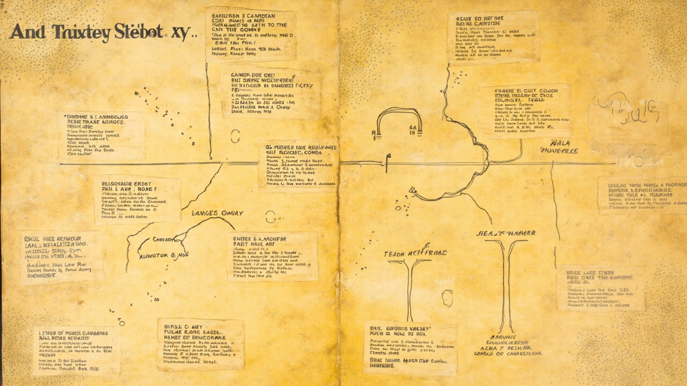

谁在连接共同体的资源：The Original People's Yellow Pages 和反主流社群的目录实验
从地下黄页到链接页、Notion 目录和 AI agent，资源如何被组织成共同体基础设施

引子：共同体不只需要理念，也需要找到彼此
1970 年代，美国各地的反主流社群面临一个共同的问题：我们知道彼此存在，但不知道怎么找到对方。
一个人想离开城市，去一个公社生活。他知道佛蒙特州有公社，但不知道具体在哪里。另一个人想找一个能修理旧车的机械师，但他不想找主流汽修店。还有一个人想卖自己种的有机蔬菜，但不知道哪些商店会买。更多的人只是想找到"同类"——那些和他们一样相信另一种生活方式的人。
声音可以连接人（Colorado Freeform Radio），食物可以维系人（True Light Beavers），信念可以指引人（Brotherhood of Spirit）。但连接、维系和指引之后，还有一个更基础的问题：资源在哪里？人怎么找到彼此？ 这就是 The Original People's Yellow Pages 试图回答的问题。
Vol.2 为什么从声音、食物、信念走向目录
如果 Colorado Freeform Radio 讨论声音如何让人听见彼此，True Light Beavers 讨论食物如何维持日常共同生活，Brotherhood of the Spirit 讨论信念如何维系方向感，那么 The Original People's Yellow Pages 把问题带到另一个层面：一个共同体如何知道资源在哪里、谁能提供帮助、人与人如何重新连接？
从声音到食物到信念到目录，是从"共同在场"到"共同行动"到"共同相信"到"共同找到"——从"我们在一起"到"我们一起做"到"我们相信同一件事"到"我们知道彼此在哪里"。
1. The Original People's Yellow Pages 是什么
从现有资料看，The Original People's Yellow Pages 更像是一个把人、服务、技能、地点和替代生活资源组织起来的目录实验。它不是一本"商业黄页"，而是一本"社群黄页"——帮助反主流社群的成员找到彼此、找到资源、找到替代生活方式的入口。
这种目录的核心功能不是商业交易，而是社群连接。它让"反主流生活"从想象变成可执行路径：一个人可以通过目录找到公社、找到有机农场、找到替代医疗、找到手工工具、找到同路人。
2. 目录为什么不是中性的
普通黄页和反主流社群目录之间的区别，不只是内容上的，更是功能上的：
| 普通黄页 | 反主流社群目录 |
|---|---|
| 帮你找到商家 | 帮你找到同路人和替代资源 |
| 以商业分类为中心 | 以生活需要和社群关系为中心 |
| 关注交易 | 关注互助、协作和连接 |
| 是信息列表 | 也是一种社群地图 |
| 解决"去哪买" | 也解决"和谁一起做" |
普通黄页的逻辑是商业的：你有一个需求，你找到一个人来满足它，交易完成，关系结束。反主流社群目录的逻辑是关系的：你找到一个人，你们可能一起工作、一起生活、一起建立某种共同性。目录不是终点，而是起点。
3. 谁在连接共同体的资源
想象一下这样的场景：一个人刚到一个新城市，他想找到一种不同的生活方式。他翻开一本目录，里面列着：
- 有机农场，需要帮手，提供食宿
- 公社，正在招募新成员，有乐队和印刷工坊
- 替代医疗诊所，使用草药和自然疗法
- 手工工具合作社，可以借用或交换工具
- 独立书店，有地下报刊和 zine
- 免费法律咨询，帮助处理土地和住房问题
- 技能交换网络：你会修车，我教瑜伽
这些场景是 70 年代反主流生活中可以想象的资源连接画面。目录在这里扮演的角色，不是"信息中介"，而是"社群入口"。它让"找到资源"这件事本身成为加入共同体的第一步。
4. 从电台、厨房、信念到目录：共同体需要不同的基础设施
连接前三篇：
- 电台组织听见；
- 食谱组织吃饭；
- 信念组织方向；
- 目录组织资源流动。
一个共同体不能只靠被感召而存在，它还需要能被找到、被联系、被使用、被维护。声音让你知道"有人在广播"，食物让你知道"有人在做饭"，信念让你知道"有人相信同一件事"，目录让你知道"具体在哪里、怎么找到他们"。
四种基础设施解决四个不同的问题：
- 声音解决"我们如何共享注意力"；
- 食物解决"我们如何共享日常"；
- 信念解决"我们如何共享方向"；
- 目录解决"我们如何共享资源"。
5. 今天回看：从地下黄页到链接页、Notion 和 Discord
今天的社群会用各种工具组织资源：
- Notion 页面记录资源、联系人、项目、知识库；
- Discord 频道按话题组织讨论和资源分享；
- Airtable 管理人和项目的复杂关系；
- 链接页（link-in-bio）聚合所有入口；
- 知识库保存共同经验和技能；
- AI agent 整理联系人、推荐服务、维护资源地图。
这些工具都延续了"目录作为社群基础设施"的问题。但今天的目录有一个关键不同：它们往往是平台化的。Notion、Discord、Airtable 都是商业平台，你的社群目录存在于别人的服务器上。70 年代的社群目录是自治的——自己编辑、自己印刷、自己分发、自己更新。
这种自治性在今天变得更加困难，但也更加重要。当一个平台可以改变规则、关闭服务、或者把你的数据卖给广告商时，"谁拥有目录"就变成一个政治问题。
6. AI agent 时代：谁来维护资源地图
今天，AI agent 可以帮你整理联系人、推荐服务、维护知识库、汇总群聊资源、生成行动清单。技术让"维护资源地图"变得越来越自动化。
但这带来一个新问题：当一个 agent 可以帮你管理信息时，"谁决定哪些资源被看见，哪些连接被建立，哪些路径被推荐？"
70 年代的社群目录里，这个问题有明确的答案：是目录的编辑者和维护者。他们决定收录谁、不收录谁，怎么分类、怎么描述。这种编辑权力不是中性的——它塑造了社群的边界。
今天，AI 推荐算法也在做同样的事：决定哪些内容被推荐、哪些人被连接、哪些资源被看见。但算法的逻辑是商业的（最大化 engagement），不是社群的（最大化互助）。
The Original People's Yellow Pages 提醒我们，"谁来维护资源地图"从来不是一个纯粹的技术问题，它是一个政治问题。谁来决定目录里有什么？谁来更新它？谁来确保它服务于社群而不是平台？这些问题，70 年代的社群用编辑委员会和志愿者网络来回答，今天的我们用算法和产品经理来回答。但问题本身没有消失。
结语：共同体最难的不是拥有资源，而是让资源彼此可见
The Original People's Yellow Pages 是一个资源目录，但它真正记录的，是一种"让资源彼此可见的能力"。怎么把分散的人、技能、工具、地点和知识组织成一张可以使用的地图，怎么让这张地图既开放又有边界，怎么让它持续更新而不是一次性印刷——这些能力，比任何具体的资源列表都更难复制。
从 Colorado Freeform Radio 到 True Light Beavers 到 Brotherhood of Spirit 到 The Original People's Yellow Pages，Vol.2 的四篇一直在追问同一个问题：当技术让普通人也能生产内容、也能组织生活时，谁来定义共同体的边界？谁来维护共同体的日常？谁来维系共同体的方向感？谁来连接共同体的资源？
声音可以连接人，食物可以维系人，信念可以指引人，目录可以让人找到彼此。但连接、维系、指引和找到之后，真正让共同体持续存在的，是一起生活的能力、一起相信的能力、一起找到彼此的能力。这种能力，从来都不是技术问题，而是人的问题。
来源说明
本文基于 Far Out Research Vol.2 前三篇的分析框架进行延伸讨论。The Original People's Yellow Pages 的具体资料有限，文中关于目录功能和使用场景的描述为基于反主流文化媒介特征的合理推断，不构成确切历史记录。部分当代类比为作者观点，不代表原始文献立场。
本文为当代分析视角，不构成历史定论。